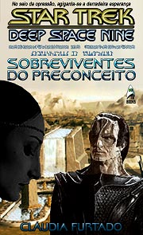
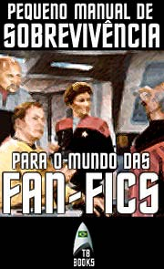

|

|
|
Acervo
da TB Books
|
Aps
o fim da Guerra Dominion, a Terra ainda est se
reconstruindo. Nesse clima de indefinio, uma eleio
pode mudar os rumos do planeta. Conhea as intrigas e
artimanhas do jogo poltico do sculo 24, nessa
incrvel jornada aonde todos j estivemos antes.
Star Trek: Earth D.C.
Leandro Martins Pinto
176 pginas
Publicado em maio de 2003
Clique aqui
para ler on-line |
|
|
 |
Em
2345, durante a Ocupao em Bajor, um jovem Cardassiano
de nome Dukat sofre um acidente com uma nave de transporte.
Seriamente ferido, sua vida fica nas mos de uma mdica
Bajoriana que preza sua tica profissional acima de tudo.
Star Trek: Deep Space
Nine - Sobreviventes do Preconceito
Cludia Furtado
96 pginas
Publicado em setembro de 2002
Clique aqui
para ler on-line
ou faa o download do
livro em formato PDF, com 1,1MB |
| |
|
 |
Se
voc chegou aqui sem nem saber direito o que uma
"fan-fiction", esse texto para voc. De uma
forma leve, didtica e, o que mais importante,
sinttica, o Trek Brasilis traz at voc um
breve histrico das fan-fics e d dicas de como se
tornar um escritor dessa modalidade literria.
Pequeno Manual de
Sobrevivncia TB Books para o mundo das Fan-Fics
Mariana Pedroso
1 pgina (HTML)
Publicado em 2002
Clique aqui
para ler on-line |
|
|